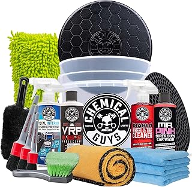
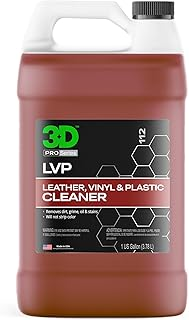
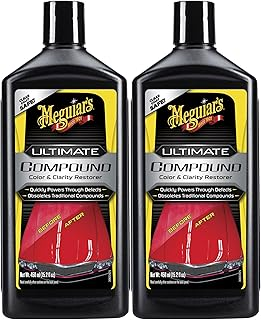

← bestdetailingkit.com
Detailingkit: What We'd Buy With Our Own Money
May 2026
There's a reason detailingkit is trending right now. People want quality without overpaying, and 2026 delivers solid options at every price point.
Mistakes to Avoid
Overbuying features — Most people use 20% of high-end detailingkit features. Don't pay for what you'll never touch.
Ignoring the fine print — Some detailingkit listings look great until you realize key parts are sold separately.
Advice From Experience
- Between two options? Go with the one that has more reviews. Volume of feedback matters for detailingkit.
- Buying detailingkit as a gift? Pick something with easy exchanges. Preferences are personal.
- The Q&A section on detailingkit listings often answers questions that no review covers.
- The 3-star reviews are gold. They're usually the most balanced and honest takes on detailingkit.



What We Recommend
$29.99
⭐ 4.5 · $16.99
⭐ 4.6 · $99.99
Key Features Worth Paying For
- Return policy — Easy returns mean lower risk. Even well-reviewed detailingkit might not suit your situation.
- Material grade — Higher-grade materials in detailingkit last longer and perform better, even when designs look similar.
- Price trends — detailingkit prices fluctuate. Track your picks and buy when the price dips.
- Value ratio — Mid-range detailingkit usually deliver 90% of premium performance at half the cost.
- Brand track record — Established detailingkit brands have more to lose from bad products. That accountability matters.
The Bottom Line
Our comparison tables on bestdetailingkit.com break down options by price, features, and ratings. Start there.
Affiliate Disclosure: As an Amazon Associate, we earn from qualifying purchases. This doesn't affect our recommendations.